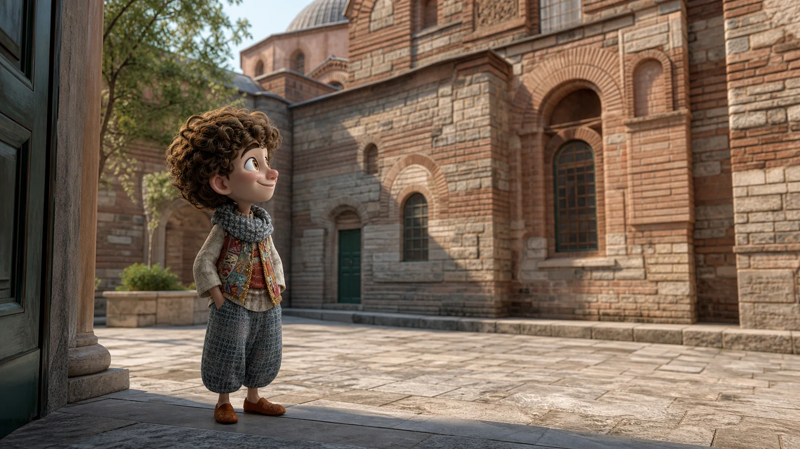
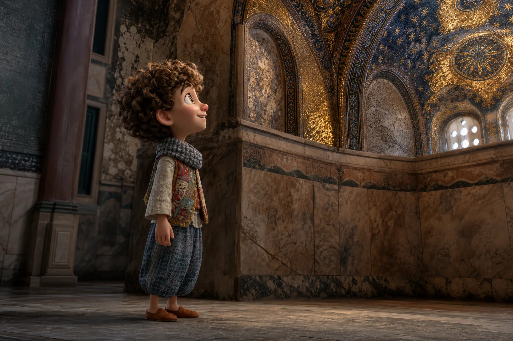
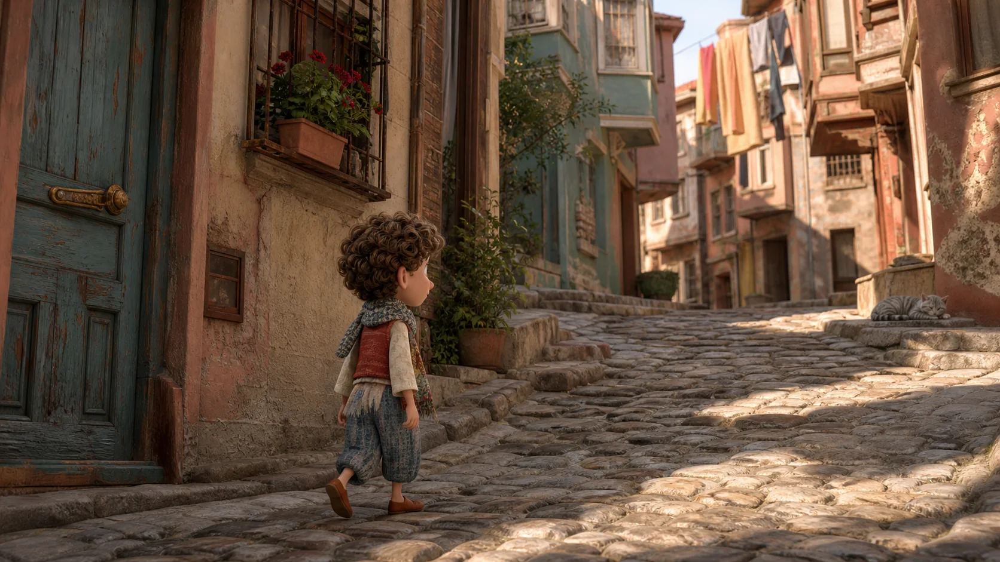
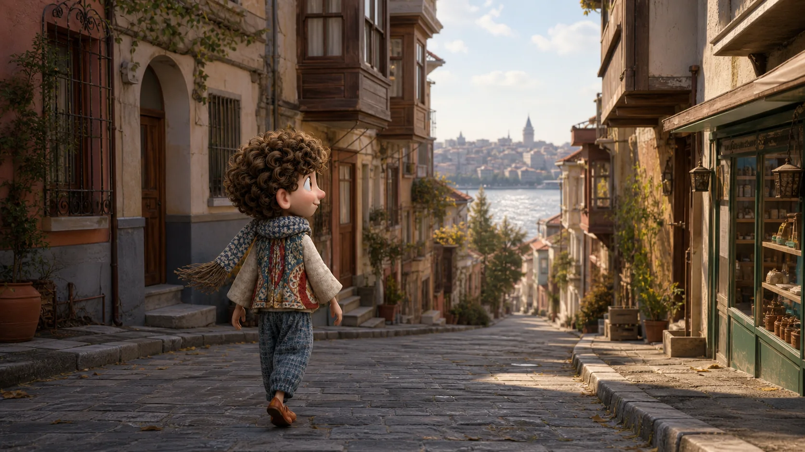

Megnézhetjük?

Történet 04 · Kariye-től az Aranyszarvig
Egy apró részlet után másképp nézel az egész utcára.
Kariye-ben közel megyünk. Balatban és Fenerben megtanuljuk, mikor kérdezzünk — és mikor hagyjuk békén a várost.
Gyere. Előbb nézzük meg, be lehet-e menni.
A hely mai rendje fontosabb a tervünknél
Előbb kérdezzük meg, beléphetünk-e.
Kariye ma működő mecset. Nem feltételezzük, hogy minden ajtó mindig ugyanúgy nyílik — érdeklődünk, és az aktuális rendhez igazodunk.
A küszöbnél ezt mondhatod
Ziyaret edebilir miyiz?
Megnézhetjük? Bejöhetünk látogatóként?
Ha most nem lehet, nem veszítettünk el semmit. A hely nem a mi időbeosztásunkhoz igazodik.

Egy részlethez közel, a helyhez tisztes távolságban
A fényképezés előtt is lehet kérdezni.
Ha nem egyértelmű, hogy készíthetsz-e képet, egy rövid kérdés többet ér bármilyen feltételezésnél. A választ pedig ugyanilyen természetesen elfogadjuk.
Törökül így hangzik
Fotoğraf çekebilir miyim?
Készíthetek fényképet?
„Nézd csak. Egy pillanat attól is megmaradhat, hogy nem visszük haza képen.”Keressük meg Balatot
Most már te kérdezed meg az irányt
A következő történetet nem egy tábla mutatja.
Ezzel kérhetsz útbaigazítást
Balat'a nasıl gidebiliriz?
Hogyan jutunk el Balatba?
Nem baj, ha a válaszból csak a kézmozdulatot értjük. Induljunk arra, aztán kérdezünk még egyszer.

Egy lakónegyedben vendégként
Ne az egész utcát vidd el. Válassz egyetlen részletet.
Nem gyűjtünk homlokzatokat. Azt jegyezzük meg, amin a te tekinteted állt meg.
Ali megvár
Nem kell gyorsan választanod. Nézz körül még egyszer.
Ha tovább visz a kíváncsiság
Bu sokak nereye çıkıyor?
Nézzük meg, hová érkezünk
Hová vezet ez az utca?

A végén a vendég hív tovább
Most már te kérdezed meg, sétáljunk-e még.
A részletekhez közel mentél, engedélyt kértél, megtaláltad Balatot, és végigmentél egy utcán anélkül, hogy díszletté változtattad volna.
Ezt most már te mondod Alinak
Biraz daha yürüyelim mi?
Sétáljunk még egy kicsit?
Menjünk. Most te mutatod az irányt.
Ahogyan most már vendégként érkezel
Nem két helyet láttál. Öt helyzetben figyelmes vendég voltál.
A mondatok nem egy műemléket írnak le. Abban segítenek, hogy bárhol tisztelettel kérdezhess, tájékozódhass és továbbindulhass.
Készíthetek fényképet?
Hogyan jutunk el Balatba?
Hová vezet ez az utca?
Sétáljunk még egy kicsit?
Ha kiválasztasz egy apró részletet Balatban, Ali azt is megőrzi erről a sétáról.
Az öt mondatot egy mozdulattal elteheted Ali zsebébe.
Vissza Ali várostérképéhez